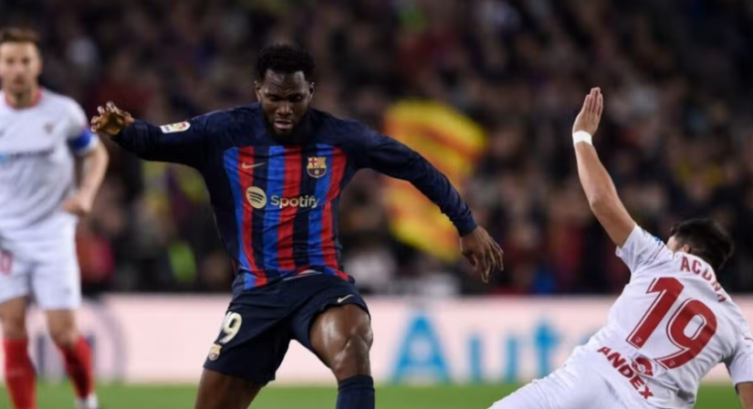
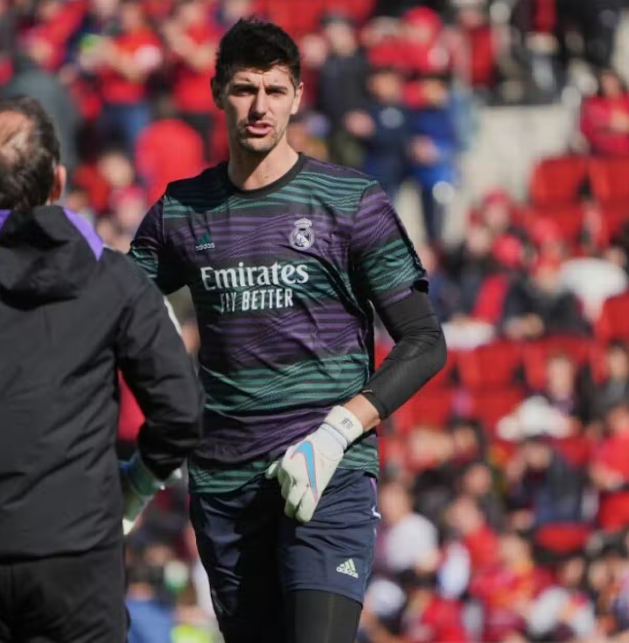

🔴 Barça-Sevilla EN VIVO. ¡En juego la segunda mitad el Camp Nou!
Oportunidad de oro para encauzar LaLiga para el FC Barcelona. Tras la derrota del Madrid, el conjunto de Xavi Hernández recibe al Sevilla FC para cerrar la acción del domingo. Sigue con...

🚨 MARCA: COURTOIS, CASI DESCARTADO PARA EL MUNDIAL DE CLUBES

Malos augurios crecen sobre la participación de Thibaut Courtois en el Mundial de Clubes. Y es que tal y como adelanta Marca, las primeras exploraciones no son optimistas sobre la dolencia en el abductor del jugador.